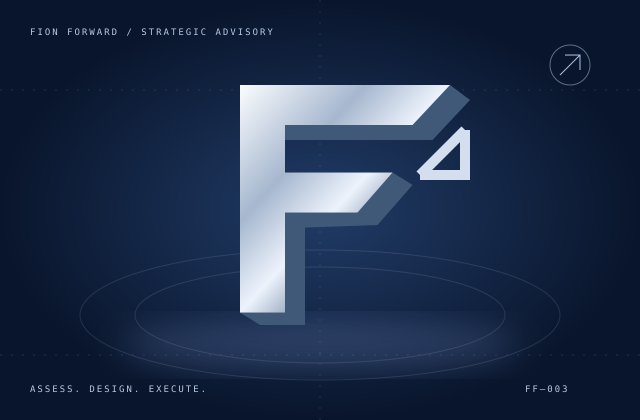
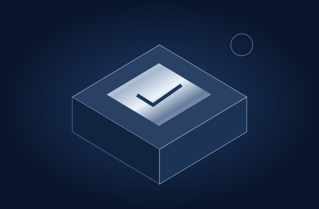
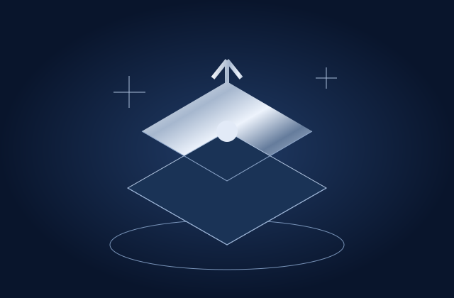

GROWTH / WEB
有流量，卻沒有詢問？
官網與互動網頁
企業官網・活動頁・預約動線
SEO・搜尋追蹤・轉換設計
討論需求 ↗SEO・搜尋追蹤・轉換設計
框架視覺示意，非即時監測資料或企業評分。

選擇你正在面對的難題。
讓問題對應到做法、交付成果與追蹤指標。
服務定位：上市櫃企業・百人組織・成長型事業
STRATEGY TO EXECUTION ↗策略、製作與系統建構，一起推進。
有流量，卻沒有詢問？
重複作業，持續吃掉人力？
名單很多，跟進卻中斷？
品牌有故事，市場沒感覺？
報表到手，決策已經太晚？
門市變多，管理跟不上？
協助企業主評估新機會，建立可追溯的研究、財務假設與決策門檻，銜接啟動與營運計畫。

01 / INVESTMENT ANALYSIS
03 / GO-TO-MARKET & OPERATIONS方法：研究 → 查核 → 試算 → 決策 → 落地。法律、稅務、審計與專業估值事項，依個案由相應專業人員查核；此處服務聚焦企業經營與事業投資評估。
跨境資產與不動產事業的常見斷點。
物件、區域、交通與營運假設各自分散。
工程更新與現金流假設未連動，難以判斷下一步。
名單來源、到場、跟進與成交各自記錄。
產業應用情境，不代表特定企業的現況或合作背書。
一篇兒童髮型圖鑑，約 19 小時的擴散表現。
分享／傳送 ÷ 按讚 ≈ 6.6 倍
擴散路徑示意，非來源歸因圖。內容策略價值：把主題做成可收藏、可轉傳的實用圖鑑。
依使用者提供的歷史數據整理；時間與瀏覽量為約數。各互動數可能重疊，未據此推算成交或營收。
依既有專案整理，採匿名呈現。
回答 5 個問題，找出優先處理的工作。
結果依固定規則產生，作為初談線索。
完成診斷即同意將本次答案與建議透過 FormSubmit 寄至顧問信箱 fionptl0700@gmail.com。請勿填入機密資訊。
用你自己的數字估算。時間釋放有助於重新分配工作；實際現金節省仍取決於人力與成本是否改變。
計算：人數 × 每週時數 × 4.33 週 × 時間減幅 × 時薪
此為情境試算，非成效保證。未扣除導入費、工具訂閱、訓練與維護成本；也未計入核對 AI 輸出的額外時間。
四個階段，連接問題、證據與執行。
盤點目標、流程與數據。
定義資源、責任與驗收。
小範圍實作，檢查成效。
建立制度、交接與追蹤。
選擇優先議題，產生顧問需求摘要。
填寫內容只在目前瀏覽器處理。按下按鈕會下載文字檔，不會送出預約或聯絡資料。